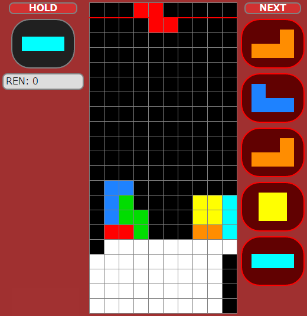
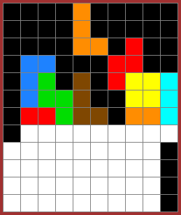
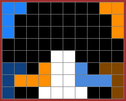
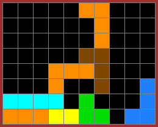

1. L스핀, J스핀
다음은 평평하게 쌓는 걸 의식하다가 S, Z를 놓을 곳을 마땅히 찾지 못하는 경우입니다. 어떻게 하면 좋을지 미리 생각해 보시고 아래를 보시기 바랍니다.

어떻게 하면 좋을지 떠올려 보셨나요?
여기서는 아래와 같이 하는 걸 추천드립니다.위의 ZL 조합은 이런 식으로 상당히 많이 사용됩니다.
취향에 따라 아래와 같이 할 수도 있습니다. 다만 Z를 세워 놓은 모양이 아름답지는 않습니다.

비슷한 LJ조합과 JL조합도 많이 사용됩니다. 아래 그림과 같습니다. 역시 실전에서 자주 활용할 수 있는 형태이니 익혀 두면 좋습니다.

평소에 안정적 지형을 만들기 위해 사용할 수도 있습니다.
이런 조건에서는 오른쪽에 벽이 없는 형태도 가능합니다.
같은 형태. 역시 미스드랍 복구용으로 쓸 수 있습니다. T스핀을 앞둔 상황이기 때문에 화력에도 도움이 될 것입니다.

유사 형태. 이것도 역시 쓸 일이 있습니다. Z미노를 미스드랍한 상황이라고 생각해 보시기 바랍니다.
.gif)
위에서 보여드린 L스핀들은 J미노로도 가능하니 위 사진들을 거울에 비친다 생각하고 J스핀을 외우시면 됩니다.
2. S스핀, Z스핀
각각의 회전에 대해 알려 드리기 전에, 테트리스는 시계 방향 회전과 반시계 방향 회전이 다르다는 것을 설명 드리고 싶습니다. 예를 들어 아래의 S미노를 보겠습니다.
위 그림에서 위쪽은 초기 상태입니다. 여기서 시계 방향 회전(키보드 X키, PS4 O키)을 하면 오른쪽 상태가 됩니다. 초기 상태에서 반시계방향 회전(키보드 Z키, PS4 X키)를 하면 왼쪽 상태가 됩니다.
왼쪽 그림과 오른쪽 그림은 같아 보이지만 전혀 다른 상태입니다. 이 글에서 사용할 회전 시스템(SRS)을 이용할 때 왼쪽과 오른쪽은 완전히 다른 상태입니다. 위치가 한 칸 다른 게 보일 텐데, 위치만 다른 게 아니라 미노의 상태도 다릅니다. 위의 초기 상태와 아래의 180도 회전 상태도 전혀 다른 상태입니다. 위치가 한 칸 다른 게 보일 텐데, 위치만 다른 게 아니라 미노의 상태도 다릅니다. 다만 180도 회전을 사용하는 경우는 많지 않기 때문에 신경을 쓸 일이 별로 없을 것입니다. 따라서 제가 화살표로 회전 방향을 알려 드리는 경우에는 그 회전 방향을 그대로 지키셔야 회전이 의도한 대로 됩니다. 아직 테트리스에 덜 익숙한 분들은 한쪽 회전만 사용하는 경우가 있는데, 스핀 기술을 배우시려면 양쪽 회전을 다 사용하는 습관을 만드셔야 합니다. 그래서 간단해 보이지만 실전에서 사용할 정도로 익숙해질 때까지는 시간이 조금 걸리는 편입니다. Z미노와 I미노도 모두 다른 상태라는 점을 신경 쓰면서 해야 합니다.3. I스핀
왼쪽과 같이 T스핀 트리플을 하고 오른쪽 같은 지형이 되었습니다. I미노를 이용해 오른쪽을 깔끔하게 만들어 봅시다.